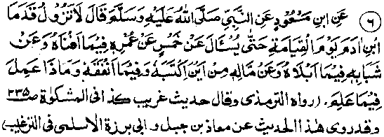
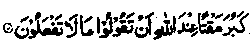
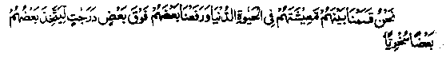
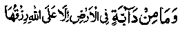

Chapter Six · Section (d): Ahadith on the foregoing subjects (concerning the excellence of Tawakkul)
Hadith 6

Rasulullah Sallallaho alaihe wasallam said: "On the Day of Resurrection, the feet of the son of Adam will be powerless to move away (from the Place of Reckoning) till he is questioned about five matters (and gives a reasonable account): (1) on what he spent his life, (2) in what pursuits he passed his youth, (3) whence he procured his wealth, (4) on what he spent it, and (5) what he did regarding the knowledge he possessed".
Note: In this Hadith, which has been narrated by a number of Sahabah, Rasulullah Sallallaho alaihe wasallam has briefly enumerated all of the matters of which everybody will have to render an account on the Day of Resurrection. Each one of these subjects (of reckoning) has been specifically treated in various other Ahadith and men have been forewarned against the Reckoning they will have to face on the Day. First and foremost, everybody will have to render an account of his entire lifetime, every second of which is an invaluable asset for man. He will be required to answer the question: in what pursuits did you spend your life? What were we created for? Is there any serious purpose, any important motive behind the creation of mankind? Or, were they created for nothing? Allah Ta'ala Himself admonishes His men to take this life seriously:
Deemed you then that We had created you in jest (for nothing) and that you would not be returned to Us (for rendering an account of your life)? (al-Mu’minun: 115)’
What is more, Allah Ta'ala Himself has, at another place in the Holy Qur’an, explained the purpose for which this life was created:
'I created the Jinn and humankind only that they may obey Me. ’ (az-Zariyat: 56)
So, everybody should consider and see how many precious moments of his life time are being spent on the occupations for which he was created by Allah Ta‘ala-on the struggle to achieve the aim and object of his life—and how much time is being spent on the so-called necessities of life, recreations and other pursuits that bear no relation to the real purpose of his life.
Suppose you employ a builder to do some construction work. You will naturally take notice of the time he spends on construction and the time wasted in smoking or taking meals, etc. So it is only fair that you allow for yourself only the same concessions as you deem fit for your subordinates. Or, take the case of a person employed at your shop whom you pay for this service. If the man remains away most of the time, doing his own household work and attends to the shop only for a short time at long job-intervals, would you like to give him his full pay? If not, then what excuse can you offer for your own behaviour in respect of your commitments to Allah Ta'ala, Who created you only that you might obey Him constantly. He is your Lord and Creator and showers His blessings on you all the time, but you waste your time in idle pursuits, beguiling yourself with the belief that your performing the Salaat regularly should suffice. Please consider whether you would tolerate such a reply from your servants?
An instructive incident has been related about this Ayat in a Hadith: A Sahabi (Radhiallaho anho) narrates that Rasulullah (Sallallaho alaihe wasallam) sent them on an expedition and advised them to recite this Ayat morning and evening. They kept reciting it and the consequence was that they returned from the expedition, quite safe and sound, after gaining a lot of booty. (Durre-Manthur).
It is sheer mercy and benevolence of Allah Ta‘ala that He has not made it obligatory for us to devote all our time to His worship. He has enjoined upon us to devote only a fraction of our time for it. How unjust of us is it that we are negligent of our other duties to Him?
The second question on the Day of Judgement will be, ‘How did you spend the vigour of your youth? Was it spent in performing good deeds that win the pleasure of Allah Ta'ala, such as prayers or redressing grievances of the oppressed or assisting the weak and disabled ones? Or, did you spend your youthful energy in acts of disobedience, like wasteful and wanton living or wrongdoing and cruelty to the helpless or strengthening the hands of the oppressor or in amassing unlawful wealth or in useless pastimes, which are neither beneficial in this world nor in the Hereafter?’ Bear in mind! You will have to appear for reckoning in a Court where no one would dare to plead your case. Nor would lying, deceiving or eloquence avail you. The "secret service" of that Court (the Recording Angels) accompany you at all times. And, besides, the limbs of man’s own body, with which he commits misdeeds, will bear testimony to his sins and confess to the crimes:
This Day (The Day of Resurrection) We seal up mouths and the hands speak out and feet bear witness as to what they used to perform. (Yaseen: 65)
That is to say, hands will speak out and name the persons wronged and mention the misdeeds committed through them. The feet will bear witness to the immoral gatherings which they attended. Allah Ta'ala says, in another context
And (make mention of) the Day when the enemies of Allah Ta'ala will be gathered together unto the fire. They will be driven on in ranks, till, when they reach it (and the reckoning starts) their ears, their eyes and their skins will testify against them as to what they used to do. And they will say unto their skins and limbs: Why did you testify against us?’ These will say ‘Allah hath given us speech; He Who giveth speech to all things and Who created you and unto Whom you have to return (after rebirth). (Here Allah admonishes His men). You were not ashamed of your ears and your eyes and your skins testifying against you. (For, obviously nobody can hide his misdeeds from his own limbs). But you deemed that Allah knew not much of what you did. (You used to say to yourselves, "Do what you will. No one can possibly call you in question"). Your notion that you had of your Lord (that He is unaware of your deeds) hath ruined you and you find yourselves (this Day) among those who are utterly lost. (Ha Mim as-Sajdah: 19-23)
In the Books of Hadith, there are many Traditions on the subject of testimony of the limbs.’ A Hadith says: Anas Radhiallaho anho narrates that they were once sitting in company with Rasulullah Sallallaho alaihe wasallam when he smiled and his blessed teeth became visible. He then asked if they knew why he had smiled. They replied that Allah and His Rasul knew best. He then told them that, on the Day of Judgment, a man will say to his Lord, ‘O Allah! Have you not granted me protection against injustice?’ Allah Ta'ala will reply, ‘certainly’. The man will then say, "I do not trust any outside witness, concerning myself. Allah Ta'ala will reply, "Well, We shall make you a witness to yourself. His mouth will then be sealed up and the parts of his body will be ordered to speak. They will recount all his deeds and, when he is allowed to speak again, he will say to his limbs, ‘May you be cursed and suffer for it! It was for your sake that I indulged in all these things’. (Mishkaat). (That is to say, it is through the limbs that one derives sensual pleasures from sins but, on that Day, these very limbs will become witnesses against themselves. The fact is that the parts of the body will also be helpless as, on that Day, all things will be rendered incapable of telling lies.)
Another Hadith says that, of all the parts of the body, the first to speak out will be the left thigh, which will disclose what misdeeds it was made to commit. All the other limbs will be made to speak afterwards. In short, each part of the body will speak out and recount all the deeds, good or bad, committed by itself. That is why Rasulullah Sallallaho alaihe wasallam, remarked once, in another Hadith, "Recite the Kalimah(Allah is beyond all imperfections) and (All praise be to Allah) and count them on your fingers for, on the Day of Judgment the parts of the body will be granted the power to speak and they will have to face questioning".
This Hadith means that, when these limbs are given the power of speech and they reveal all the sins, they will also recount the many good deeds performed by them. While the hands bear testimony about misdeeds and acts of violence and disobedience, they will also stand witness to the reciting and counting of sacred Names of Allah Ta'ala and the giving of Sadaqat and participating in other good deeds. The subject is too vast to be treated at full length. However, the gist of the matter is that, in youth, one should not be swayed by passions and must guard oneself against wrong-doing, cruelty and other sinful deeds. Rasulullah Sallallaho alaihe wasallam says:
"Youth is a kind of madness and women are the snares of the shaitan".
That is to say, in the frenzy of youth, one is easily caught in these snares. We listen to these words in every Friday sermon, as they form part of the ‘Khutabah’. But, intoxicated by the passions of youth, we never think that we shall be questioned about our youth. We are wasting our youthful energy by spending it on sinful deeds or utilizing it for earning worldly wealth, and do not realize that this boon has been granted to us so that we may spend it in performing such good deeds as are beneficial for the Akhirah. Fortunate are those young people who remain constantly absorbed in striving for the cause of Allah Ta'ala and keep away from sins!
The third question to be asked on the Day of Resurrection (about which the above-mentioned Hadith says that nobody will be allowed to leave his ground until he has answered it), will be about his wealth. He will have to explain whether the sources through which he acquired it were lawful or unlawful. We have touched upon this subject, somewhat briefly, under the preceding Hadith. Rasulullah Sallallaho alaihe wasallam says: "If a man acquires wealth by unlawful means and gives it in alms (Sadaqah), it will not be acceptable, neither will he be blessed in it ‘if he spends it on his needs; and if he dies, leaving it behind as inheritance, it will be his provision for Jahannam." '
Another Hadith says: "Flesh (of a man’s body), which has been nourished with food procured by unlawful means, is more fitting for Jahannam’." Still another Hadith has been quoted, "If anybody buys a garment for ten Dirhams (silver coins) and among these ten there is one Dirham unlawfully acquired, his Salaat will not be acceptable as long he wears it." (Mishkaat)
There are numerous Ahadith of Rasulullah Sallallaho alaihe wasallam which state that: "Do not regard your means of sustenance as something beyond your reach. For, a person will not die until he has received the entire provisions apportioned for him under Divine Decree. So, adopt the best means for earning your livelihood. Procure lawful provisions only, shunning all that is unlawful". It occurs in many Ahadith that a man’s sustenance pursues him in the same way as his hour of death. Just as death is inevitable, similarly, everybody’s provision, decreed for him by Allah Ta'ala, must inevitably reach him. Another Hadith says, "No one, even if he tried, can miss his destined provision, as nobody can escape death". Still another Hadith has it "The sustenance for everyone has been preordained. If all mankind and the Jinns were to unite and try to deprive him of his provision, they could not do so."
Rasulullah Sallallaho alaihe wasallam says, in a Hadith: "If you possess four qualities, you should not grieve over missing any worldly benefits: trustworthiness, truthful speech, good habits and pure means of livelihood".
There is another Hadith that narrates: ‘Blessed is the man whose livelihood is honestly earned, whose heart is pure, whose outward behaviour (observance of rituals, manners’ etc.) is noble, and people are safe from the evil in him. Blessed is the man who acts upon his knowledge, who spends all that exceeds his needs for the cause of Allah Ta'ala, and who guards his tongue against unnecessary talk.’
It has been narrated in a Hadith that once Sa‘d Radhiallaho anho asked Rasulullah Sallallaho alaihe wasallam to pray to Allah Ta'ala that He might make him ‘Mustajaab-ud-Da’waat’ (i.e. a pious person whose supplications are fulfilled). Rasulullah Sallallaho alaihe wasallam said, ‘Make your means of livelihood pure (i.e. do not partake of doubtful things), you will always have your Du‘aas (supplications) fulfilled. By Him Who holds the soul of Muhammad in His Hands, a man takes a morsel of Haraam food into his stomach. which renders his forty days’ devotion unacceptable to Allah Ta'ala. And a person befits Jahannam if he has been feeding himself with Haraam food.’ There are many more Traditions on the subject cited in Targheeb. Therefore, one should be very cautious with regard to the sources of one’s income. On the face of it, this caution might restrict one’s financial gains. But this seeming loss turns out to be very beneficial in the long run, in as much as one is blessed in one’s honestly earned money and is also protected from ultimate harm.
The fourth question to be asked from a person on the Day of Resurrection (as mentioned in the Hadith quoted above) will be about the things on which he spent his wealth. As a matter of fact, the very question forms the subject matter of this book. It behoves a man to spend his wealth for the cause of Allah Ta'ala. And, the loss of hoarding money is two-fold: one does not make use of it for one’s own benefit, and it is left behind as a dead weight. Various other harms of hoarding wealth have been described at the end of chapter two of this book (part one). Obviously, the greater a man’s possessions are, the longer will it take him to go through the Reckoning. And the reckoning is to be made on the Day of Resurrection, which would be a terrible Day; everybody will be frightened out of his wits and will be drenched in sweat, owing to intense heat of the Day; he will be out of his senses as if he is drunk, though he will not be actually drunk. Says Allah Ta'ala regarding that Day:
'O mankind, fear your Lord. Lo! The earthquake of the Hour (of 'Doom) is a tremendous thing. On the Day when you behold it, every mother giving suck will forget her suckling baby and every pregnant female shall drop her (unformed) load (in terror); and thou (O Muhammad) will see mankind as drunken, yet they will not (really) be drunken, but the punishment of Allah will be severe (the terror whereof will make them senseless)! (al-Hajj: 1-2)
Allah Ta'ala says in another Ayat:
"Their reckoning draweth closer and closer to mankind. (The Day of Resurrection is rapidly drawing closer to mankind), while they turn away in heedlessness (are least prepared for their reckoning)". (al-Ambiyaa: 1)
A few Rukus later, there is another Verse on the subject:
And we set a just balance for the Day of Resurrection, so that no soul is wronged in aught. Though it (good or bad deed) be of the weight of a grain of mustard seed, We will bring it to account. And We suffice for reckoners. (al-Ambiyaa: 47)
And in Surah ar-Ra‘d, Allah Ta'ala says:?
For those who respond to the call of their Lord (fulfil His Commandments) is bliss (in Jannah); but those who do not respond to Him (do not obey Him), even if they had (on the Day of Resurrection) all that is on the earth, and as much more, (in vain) would they proffer it as ransom (to buy their release from the punishment). For them will be a woeful Reckoning. (ar-Ra‘d: 18)
There are quite a number of Verses in the Holy Qur’an which contain admonitions regarding the Reckoning to be made on the Day of Resurrection, the severity, the grievousness and the extreme significance of that Day. ‘Aishah Radhiallaho anha narrates that once Rasulullah Sallallaho alaihe wasallam said, ‘On the Day of Resurrection, the one who undergoes Reckoning will be ruined (because it will be difficult to render a perfect account of all the deeds).’ She then asked whether Allah Ta'ala had not said (in Surah al-Inshiqaaq), ‘He will receive an easy Reckoning,’ to which Rasulullah Sallallaho alaihe wasallam replied, ‘That (the Reckoning mentioned in the Surah) is just a passing review of the deeds, but those who are subjected to a close examination will perish.’.
In another Hadith, ‘Aishah Radhiallaho anha relates that Rasulullah Sallallaho alaihe wasallam used to say, in the course of his prayers: ‘O Allah! grant me an easy Reckoning!, She asked, ‘O Rasulullah what is an easy Reckoning, to which he replied:" That one’s book of Deeds would be presented and Allah Ta'ala would say: T for give you’. As for him who is examined closely, he will surely perish".
Abu Hurairah Radhiallah anho reports Rasulullah Sallallaho alaihe wasallam as saying: ‘Whosoever possesses three characteristics will receive an easy Reckoning, Allah Ta'ala will bless him and grant him entry into Jannah. Those three characteristics are: bestowing favours upon those who are not kind to you, forgiving those who do you wrong and joining ties of relationship with those who sever relations with you. (Durre-Manthur)
It has been narrated in another Hadith that Rasulullah Sallallaho alaihe wasallam once said: "To everyone of you, Allah Ta'ala will speak in such a way that there will be no interpreter between you and Allah Ta'ala, nor any concealing veil. He will look to his left and right and see nothing but the deeds( good or bad) he had done in the worldly life; and he will look in front and see nothing but blazing fire of Jahannam. So, protect yourselves from the fire of Jahannam by means of Sadaqah (which is the best protection against the fire of Jahannam), even though it should be with a half date".
In still another Hadith, Rasulullah Sallallaho alaihe wasallam is reported to have said: "Jannah was shown to me and I saw that those on exalted stations in Jannah were the poor ones among the ‘Muhajireen’ (the emigrants). There were very tew wealthy persons and very few women among the inhabitants in Jannah. I was told that the rich were still going through their accounts at the gates of Jannah, and the women-folk had been held back owing to their love for gold and silver".
A Hadith narrates:"! stood at the doors of Jannah and I saw that the majority of those who entered it were the poor ones, the rich being engaged in reckoning, And I stood at the gates of Jahannam and I saw that the majority of those who entered it were the women-folk’It occurs in another Hadith, that: There are two things which a man fears, but both of them are good for him: he fears death, though death is. his protection against trials and temptations; and he fears decrease in Wealth, though the less he possesses the lighter the Reckoning (on the Day of Resurrection). (Targheeb)
It has been narrated in a Hadith that once Rasulullah Sallallaho alaihe wasallam was sitting in company with his Sahabah when he said, ‘Last night Jannah was shown to me and I saw your ranks in it; he turned to Abu Bakr Siddiq, Radhiallaho anho and said ‘I saw a person who, to whichever gate of Jannah he went, was welcomed with greetings of ‘Marhabaa’, ‘Marhabaa!’ (most welcome) .(For each virtuous deed, there is a particular gate in Jannah and the invitation to enter by any gate indicates that he possessed all the virtues par excellence). Salman Radhiallaho anho submitted, ‘O Rasulullah, such a one must be a very virtuous person, exalted above others (in spiritual stature).’,
Rasulullah Sallallaho alaihe wasallam said, ‘It was Abu Bakr’ Radhiallaho anho; then he turned to Umar Radhiallaho anho and said, ‘I saw a palace in Jannah, built with a single brilliant white pearl inlaid with rubies. I asked whose palace it was and I was told that it belonged to a young man of the Quraish tribe. I thought that such a brilliant and magnificent palace must be mine, because I am the Leader of all Rasuls; I was just going to enter the palace when I was told that it belonged to Umar!’ Rasulullah Sallallaho alaihe wasallam then told them about the ranks in Jannah attained variously by Uthman, Ali and many other Sahabah Radhiallaho anhum. After this, Rasulullah Sallallaho alaihe wasallam turned to Abdur Rahman Ibne Auf Radhiallaho anho and said, ‘Of all my Sahabah, you came to join me after much delay and I felt afraid that you might have been undone. When you did come at last, I saw that you were all wet with perspiration. When I asked you why it had taken you so long, you said that you had been busy rendering an account of your numerous belongings. You were questioned as to how you had procured your wealth and how you spent it.’ Hearing this, Abdur Rahman Radhiallaho anho burst into tears and said ‘O Rasulullah, last night I received a caravan of a hundred camels loaded with merchandise. I give all these goods as ‘Sadaqah’ for distribution among the orphans and poor people of Madinah Munawwarah. I hope that by virtue of this Sadaqah, Allah Ta'ala will grant me a lenient Reckoning!’(Targheeb)
According to another Hadith, once Rasulullah Sallallaho alaihe wasallam said to Abdur Rahman Ibne ‘Auf."Abdur Rahman, you are one of the wealthy persons of my Ummah and you will go to Jannah, crawling on your knees (you will not be able to walk straight). Advance loan to Allah Ta'ala, so that you could walk easily."Abdur Rahman Radhiallaho anho said, ‘O Rasulullah what should I lend to my Lord?’ Rasulullah Sallallaho alaihe wasallam replied, ‘Give all your wealth as Sadaqah’. At this, Abdur Rahman Radhiallaho anho got up from his seat and went out to fetch all his fortune and present it to Rasulullah who, when he was gone, sent a messenger after him who called him back. Rasulullah Sallallaho alaihe wasallam then said to him, ‘ Jibrael Alaihissalam just came to me with the message that I should advise you to entertain your guests, to feed the poor, to grant the wishes of those who ask your favours and to start with your own relatives. These acts of generosity will suffice to purify you.’ (Haakim)
Abdur Rahman Ibne Auf Radhiallaho anho was one of the highly esteemed Sahabah and a man of great merits: he is one of the ‘Asharah Mubassharah’ (The ten fortunate ones whom Rasulullah Sallallaho alaihe wasallam gave the glad tidings of Jannah in their lifetime). Besides, he was one of the six eminent Sahabah to whom Umar Radhiallaho anho had, before his martyrdom, assigned the responsibility of choosing his successor, remarking on this occasion, "These are the Sahabah with whom Rasulullah Sallallaho alaihe wasallam was pleased when he passed away". What is more, it was Abdur Rahman Ibne Auf Radhiallaho anho whose opinion was finally accepted by all the other members and, consequently, Uthman Radhiallaho anho was chosen as the third Khalifah of the Muslims. He is counted among the ‘Saabiqoon-al-Awwaloon’ (The vanguard of Islam, the first entrants into the Faith) and Allah Ta‘ala speak highly of these favoured ones, thus:
The vanguard of Islam, the first to lead the way, of the Muhajireen (the emigrants from Makkah) and the Ansaar (The Muslims of Medinah who welcomed the emigrants and helped them with their wealth and defended them with their lives) and also those who follow them in good deeds-Allah is well pleased with them and they are well pleased with Him. For them has He prepared gardens underneath which river? flow wherein they will abide for ever. This is the supreme triumph (at-Taubah-100)
Abdur Rahman Ibne Auf Radhiallaho anho performed Hijra twice. He participated in the Ghazwah of Badr (Battle of Badr) and all the other expeditions led by Rasulullah Sallallaho alaihe wasallam; even during the times of Rasulullah, he was esteemed as a man of learning and a man of ‘Fatwah’ (a legist capable of giving verdicts on matters relating to Islamic Law). In some important matters, Umar Radhiallaho anho accepted and acted upon his advice. Once Rasulullah Sallallaho alaihe wasallam was on a journey when he offered Fajr Salaat’ as a ‘Muqtadee’ (one who is led in prayers). It so happened that Rasulullah Sallallaho alaihe wasallam had gone away to relieve himself when the Sahabah, with common consent, chose Abdur Rahman Radhiallaho anho as their Imaam. When Rasulullah came back, one Rak’at had already been completed, so Rasulullah Sallallaho alaihe wasallam joined the congregation (Jama'at) and offered his Salaat as a Muqtadee. During the first year of his Caliphate, Umar Radhiallaho anho deputed him as Amir-ul-Hajj on his behalf. (Isabah)
In short, despite his numerous merits and virtues, Abdur Rahman bin Auf lagged behind the other Sahabah Radhiallaho anhum, of his rank, owing to his excessive riches. All this fortune had been bestowed upon him by Allah Ta'ala, as a special favour and a kind reward; for, the Traditions relate that he was very poor in the early period of his life.
During the early years after Hijrah, Rasulullah Sallallaho alaihe wasallam established “fraternity’ among the Muhajireen and the Ansaar, so that the Ansar should help the poor ones among the Muhajireen especially on the grounds of this sacred bondage. Rasulullah established the bond of brotherhood between Abdur Rahman Ibne‘Auf and Sa'd bin Ar-Rabi Ansaari. Sa'd Radhiallaho anho said to him. "By the Grace of Allah Ta'ala, I am the wealthiest person in Madinah Munawwarah. I give you half of my entire property. Besides, I have two wives. I shall divorce anyone of them, you like, and you can marry her after the expiry of the ‘Iddat’ (mandatory period of waiting, during which a woman may not remarry)". But Abdur Rahman Radhiallaho anho, prompted by his magnanimity, replied ‘May Allah bless you in your family and your property. I do not want any of these, just show me the way to the market.’ Then he went to the market' and started doing business. In the evening he had made some profit of condensed dry yoghurt and butter oil. In this way, he was gradually able to save up sufficient money and got married after a few days. (Bukhari)
Then a time came when Rasulullah Sallallaho alaihe wasallam exhorted his Sahabah to give Sadaqah, and Abdur Rahman Radhi-allaho anho presented half of his property as Sadaqah. We can have an idea of the extent of his fortune from the foregoing Hadith, which says that he offered hundred camel-loads of merchandise as Sadaqah; and this was just a contingent of his merchandise from Egypt alone. On another occasion, he gave forty thousand Dinars in Sadaqah. On still another occasion, he contributed five hundred horses and five hundred camels for Jihaad and emancipated thirty thousand slaves. Another version of the Hadith says that he emancipated thirty thousand families of slaves. Who knows how many men, women and children there might have been in each such family! (Mustadrak)
Once he sold an estate for forty thousand Dinaars and distributed the entire amount among the destitute, the Muhajireen his own relatives and the Azwaaj-e-Mutahhraat; i.e. the wives of Rasulullah. (Mustadrak)- On his death-bed, Abdur Rehman Radhiallaho anho made a will, leaving four hundred Dinaars as a legacy to each one of those Sahabah Radhiallaho anhum who had participated in Badr. There were one hundred participants of Badr living at that time. (Isaabah). He also willed that a garden of his be presented as a gift to the wives of Rasulullah Sallallaho alaihe wasallam, which was sold for forty thousand Dinaar, With regard to the expenditure on personal needs, a Tradition says that once he took a bath and sat for dinner and a bowl of ‘Thareed’ (bread crumbled and mixed with-soup, with pieces of meat in it) was brought to him. Seeing this, he began to weep. Someone asked him what made him weep. He replied, ‘Rasulullah Sallallaho alaihe wasallam passed away from this world and he did not have enough barley bread to satisfy his hunger. This prosperity that we witness now does not augur well for us (extracted from Isaabah). He meant to say that, if this prosperity had been beneficial for our soul and our ultimate good, it should have been granted to Rasulullah Sallallaho alaihe wasallam. As all these worldly pleasures were not granted to Rasulullah, they do not seem to be beneficial for us. The least is that a man will have to face Reckoning for his worldly goods.
The fifth question to be asked on the Day of Resurrection (according to the Hadith quoted above) will be how far did one practice the knowledge bestowed by Allah Ta’ala on a person. Ignorance about a crime is no excuse and ignorance of law is not accepted as a valid excuse in any court of law. For, it is one’s duty to have knowledge of the law. And, ignorance of the Commandments of Allah Ta'ala is in itself a crime and a sin. Therefore, Rasulullah Sallallaho alaihe wasallam said, "The search for (religious) knowledge is obligatory for every Muslim’. Obviously, committing a crime knowingly, in sheer defiance of law, is a far more grievous offence. Rasulullah Sallallaho alaihe wasallam said, "Keep giving good counsel to one another in the light of the knowledge you possess. For, dishonesty in matters relating to knowledge is worse than dishonesty in financial matters and you will have to account for your knowledge". There are numerous Ahadith to the effect that: ‘Whosoever is asked about something he knows and conceals it, a bridle of fire will be thrust into his mouth on the Day of Resurrection’..
Once, Rasulullah Sallallaho alaihe wasallam delivered a sermon, in the course of which he praised certain tribes. He then said’ "What is the matter with the people who do not instruct their neighbouring tribes in Deen, nor give them good-counsel; they do not inculcate in them a proper understanding of ‘Deen’, nor persuade them to do good deeds; nor do they forbid them to do evil deeds? And why is it that some people do not wish to learn (religious) knowledge from their neighbouring-tribes, nor do they desire to have a proper understanding, nor do they take counsel from their neighbours. Let those (who are learned) instruct their neighbours in ‘Deen,’ admonish them and inculcate in them a proper understanding of Deen and let those (who are ignorant) learn all these things from the learned ones. I swear by Allah, if they failed to do so, they would be punished severely even in this world (in addition to the punishment in the Hereafter)'7. Saying this, Rasulullah Sallallaho alaihe wasallam got down, from the pulpit. People began to talk about the tribes which he meant. Rasulullah Sallallaho alaihe wasallam said that he was referring to the Ashlarites (people of the al-Ash‘ari tribes) who were possessed of knowledge and a proper understanding of ‘Deen’, while the tribes living in their neighbourhood were ignorant of religious knowledge.
When the news reached the Ash'arites, they came to Rasulullah Sallallaho alaihe wasallam and submitted, "O Rasulullah! we have come to know that you praised certain people but you said such things about us". Rasulullah Sallallaho alaihe wasallam repeated his words before them: ‘Let them instruct their neighbours in ‘Deen’ admonish them, and inculcate in them a proper understanding of Deen, persuade them to do good deeds and forbid them to do evil deeds; and let the others learn all these things from the learned ones. If they failed to do so, I should punish them severely even in this world’. They submitted, ‘O Rasulullah! How should we inculcate an understanding of ‘Deen’ in their minds?’ Rasulullah Sallallaho alaihe wasallam again repeated the same words. The tribesmen asked the same question a third time and Rasulullah reiterated the same admonition. Then they submitted, "O Rasulullah, grant us respite for a year", so he granted them a year’s time for the education of their neighbours. (Targheeb & Majma‘-uz-Zawaid)
This Hadith, containing the severe admonition of Rasulullah Sallallaho alaihe wasallam, clearly indicates that it is incumbent upon those who possess knowledge and understanding of ‘Deen’ to educate the ignorant people living in their neighbourhood. It does not absolve them of their responsibility to presume that those who really want it will acquire knowledge, of themselves. True, the ignorant will be questioned about their negligence in learning ‘Deen’, which is a sin by itself. But it is also the responsibility of those who know to instruct the ignorant in ‘Deen’. They should, therefore, make efforts and adopt proper means for the religious education of the people. In doing so, they will be making a practical use of their knowledge. For, man’s practice of his own knowledge partly consists of his imparting it to others.
Of the invocations (Du‘aas) of Rasulullah Sallallaho alaihe wasallam, which have been transmitted through many different chains of narration, the one is quite well-known: ‘O Allah! I seek your protection against knowledge that profiteth not’.
Rasulullah Sallallaho alaihe wasallam once said: "On the Day of Resurrection a person will be thrown into Jahannam and his entrails will come out of the his body. He will go round his entrails as an ass goes round while turning a mill. The inhabitants of Jahannam will assemble around him and ask him, "What has happened to you? You used to command us to do good deeds and were forbidding the evil deeds." He will say, "I enjoined you to do good deeds, but did not practise them myself.
In another Hadith, Rasulullah Sallallaho alaihe wasallam is reported to have said: "On the night of Mi'ra (the Ascension), I saw a group of men whose lips were being clipped with scissors of Fire.
On asking who they were, Jibrael Alaihissalam told me that they were those preachers of my Ummah who commanded others to do good deeds but did not do so themselves.’
Still another Hadith narrates that Rasulullah Sallallaho alaihe wasallam once said: "The Zabaaniyah (the guards of Jahannam) will apprehend the wicked ulama even before apprehending the nonbelievers. When they say, "How is it that we are being punished even before the non-believers, they will be told thus, ‘The learned and the ignorant cannot be treated alike (i.e. you committed all these misdeeds, in spite of the fact that you possessed knowledge of ‘Deen’". (Targheeb). The Zabaaniya are the Angles deputed by Allah Ta'ala for casting people into Jahannam. A reference to them occurs in Surah Iqra‘. A Hadith has the following narration: Some of the inhabitants of Jannah will visit some inhabitants of Jahannam, and ask them, "What has happened to you that you are here? Indeed we have been granted entry into Jannah by virtue of what we learnt from you". They will reply, ‘We did not practise ourselves what we preached to others’.
Maalik bin Dinar reports on the authority of Hasan Basri Rahmatullah alaihima that Rasulullah Sallallaho alaihe wasallam once said: "Whoever delivers a sermon will be questioned by Allah Ta'ala on the Day of Resurrection, about the motive behind his sermon (i.e. he will have to explain whether it was meant for gaining worldly advantages- such as wealth, fame, worldly honour and glory, etc.- or for winning the pleasure of Allah Ta'ala)”.
A student of Maalik Rahmatullah alaihe says that whenever he related this Hadith, he wept bitterly, so that his voice choked with tears. Then he said, "You think that I take pleasure in giving sermons, though I am aware of the fact that, on the Day of Resurrection, I shall have to explain what motivated my sermons". (Targheeb). Nevertheless, it is incumbent upon every ‘Alim to deliver sermons (as explained in the foregoing pages). For, it is his responsibility to instruct others in religious knowledge, and there are many Ahadith to that effect (like the Tradition concerning the Ash'arites mentioned above).
Abu Dardaa Radhiallaho anho used to say, "What I fear most is that Allah Ta'ala should call me on the Day of Resurrection and I should say, ‘At your service, my Lord and Sustainer’. Then Allah Ta'ala should command me to explain how far I acted upon my knowledge". In another Hadith, Rasulullah Sallallaho alaihe wasallam is reported to have said, "The one who would have to suffer the severest punishment on the Day of Resurrection would be a learned man (an ‘Alim) who did not profit from his knowledge".
Ammaar bin Yaasir Radhiallaho anho says: "Rasulullah Sallallaho alaihe wasallam sent me to the people of the Qais tribe to instruct them in Deen. I found that they were like wild camels; all the time they were concerned about their camels and goats, taking no heed of anything else. So, I had to come back. Rasulullah Sallallaho alaihe wasallam asked me, ‘What did you do about your errand?71 told him about their condition and their indifference to Deen. Rasulullah Sallallaho alaihe wasallam said, ‘Ammaar, more astonishing is the condition of the people who possess knowledge and, still, are as heedless towards Deen as these ignorant people’.
It occurs in another Hadith that some people will be cast into Jahannam and their foul and putrid smell will be too disgusting even for the inhabitants of Jahannam. They will ask them. "What misdeeds did you commit, the evil effect whereof has caused you to give off such offensive odours? We were already in untold misery; you have added to our torment". They will reply. "We did not put our knowledge to any use".
Umar Radhiallaho anho says, "The person I fear most for in this Ummah is the hypocritical Alim.’ When someone asked what he meant by a hypocritical ‘Alim, he replied, ‘One who acts like the ignorant people, but talks like the Ulama" This is to say, a learned man who speaks eloquently but does not practise what he preaches to others is a hypocrite. Hasan Basri Rahmatullah alaihe says, "Don’t be like one who treasures up learning of the scholars and gleans rare wisdom of the sages, but acts like the ignorant fools". Sufyaan Thauri Rahmatullah alaihe says, "Knowledge calls for action. He who acts upon what he knows is allowed to retain his knowledge, while he who does not act upon it is not entitled to retain it". Fudhail Rahmatullah alaihe says: I feel great pity for three persons: the leader of the people who has been disgraced, a wealthy man reduced to poverty and a learned man (‘Alim) who has become a play-thing of people, for his worldly interests '
Hasan Basri Rahmatullah alaihe says:'The Ulama are punished when their soul become dead; and death of the soul consists in seeking worldly compensations for acts of virtue, as against the rewards in the Hereafter.’A poet says:
‘I am astonished at a person who seeks to go astray at the cost of true guidance (Hidaayat); more astonishing is the case of a man who barters away his ‘Deen’for a worldly gain. But far more astonishing is the case of a person who barters away his own ‘Deen’ for the worldly advantage of others (that is to say, he does harm to his own spiritual/religious career for the worldly benefit of other people).
Imaam Ghazali Rahmatullah alaihe writes: An Alim who is enamoured of the world is meaner and lower in spiritual status than an ignorant person; he will be punished in the Hereafter more severely.’ Successful indeed are the Ulama who have been favoured with nearness to Allah Ta'ala and who are ever concerned about the Hereafter. There are certain distinguishing signs of such Ulama:
The First and foremost, a true Alim is one who does not try to acquire wealth through his learning’ The lowest of rank among the Ulama is one who is fully aware that. this material, world is despicable, mean, polluted and evanescent;and that the life Hereafter is vast, everlasting and glorious beyond imagination, the bounties whereof are absolutely pure. Besides, every true ‘Alim fully understands that this world and the Hereafter are opposed to each other. They are, so to say, like two wives married to one and the same husband: when one is pleased with him, the other is naturally displeased. To give another example, they are like two scales of a balance-when one goes down,the other goes up automatically. Indeed, the present world and the world Hereafter are poles apart. They are like two wives of a person: if you seek to get closer to one, it will be at the expense of the other. And he has not a sane mind who does not realise that this material world has low value and is impure, the pleasures whereof are gained at the cost of hardships in this world and in the Hereafter. It is a common experience that all worldly joys involve taking pains in this world and unavoidable sufferings in the Hereafter. How can a person of such insane mind become an ‘Alim? Furthermore, a person who has no idea of the magnificence of the Hereafter and its everlastingness, is not a true believer. How can such a one become an ‘Alim? If a person does not realise that this world and the next have opposing interests and wishes to combine both, he is trying to do something which is undesirable. Such people are in fact ignorant of the code of life of all the ‘Ambiya’ (Apostles) of Allah Ta'ala. And if a person knows all these facts and, still, gives preference to his worldly interests, he is a slave of Shaitaan (Devil), ruined by lusts and facing an evil Fate. Obviously, such a lost soul cannot be counted among the Ulama (divines).
Dawood Alaihissalam relates that Allah Ta'ala says: "If an Alim prefers worldly desires to My love, the least I do to him is that I deprive him of the bliss of having communion with Me. (He cannot experience the sublime joys inherent in the Remembrance or ‘Zikr’ of Allah Ta'ala and in invocations to Him). O Dawood, have no regard for an ‘Alim who has been intoxicated by his lust for this material world, for he would lead you astray from My love. Such people are, in reality, deceitful plunderers. O Dawood, if you find someone who really seeks My countenance, be thou a servant to him. O Dawood, if anyone comes to Me running,I record his name as a ‘Jahbaz’ (a sane wise person) and I do not punish a man who has been recorded as such.’
Yahya bin Mu'aaz Rahmatullah alaihe says: When knowledge and wisdom are employed for gaining worldly advantages, these are divested of lustre and glory.’ Sa'eed bin al-Musayyab Rahmatullah alaihe says: ‘If you find an ‘Alim associating with the princes, he must be a dishonest impostor."
Umar Radhiallaho anho says: "If you find an Alim enamoured of this material world, he must be blameworthy in religious matters, for everybody occupies himself with things which are dear to him."
Someone asked a divine "Can anyone who takes pleasure in sinful deeds become an ‘Arif (a pious being with intimate knowledge) of his Lord"? The divine replied, 'I can say, without hesitation, that no one who prefers this world to the next, can be an ‘Arifs relishing sins is a far greater evil!" It should also be borne in mind that no Alim can be regarded as one concerned about the Hereafter merely for his rejection of worldly wealth, unless he also has no ambition for worldly honour or status. For, these ambitions are more harmful to the soul than the lust for wealth.
The Second distinguishing characteristic of a true‘Alim‘is that there should be no contradiction between his knowledge and his practice of ‘Dean’. That is to say, he should, of necessity, practice what he preaches to others. Allah Ta'ala says:
Do you enjoin righteousness upon mankind while you yourselves forget (to practise) it? And you recite the scriptures. (al-Baqarah: 44)
And, in another context:

‘It is most hateful in the sight of Allah that you say what you practice not". (as-Saff: 3)
Haatam Asamm Rahmatullah alaihe says: "On the day of Resurrection, none will be more grieved than an ‘Alim who imparted knowledge to others, which they acted upon and were granted eternal success, while he himself did not act upon his knowledge and, therefore, failed miserably". Ibne Simaak Rahmatullah alaihe says: "There are many who enjoin ‘Zikr’ (Remembrance of Allah) upon others, but do not remember Him themselves; they admonish others to fear Allah, but they themselves disobey Him most audaciously; they persuade others to cultivate proximity with Allah, but are remote from Him themselves; they invite others unto Allah, but themselves flee from Him".
Abdur Rahman Ibne Ghanam Rahmatullah alaihe says that ten Sahabah Radhiallaho anhum related to him the Hadith: "We were once sitting in the Masjid Quba and learning (religious) knowledge when Rasulullah Sallallaho alaihe wasallam came and said to us, ‘Acquire as much knowledge as you will but Allah Ta'ala a will not reward you unless you act upon what you know."
The third distinguishing characteristic of a true ‘Alim’ is that he is always concerned with such branches of knowledge as are beneficial for the Hereafter and which exhort one to perform good deeds. He is least interested in that branch of knowledge which has little or no use for the Akhirah. The fact is that it is unwise to regard these as true ‘Ilm’ or learning. It is sheer ignorance to regard oneself as an ‘Alim simply because one is possessed of worldly knowledge; the pity is that such a person is not particular about learning religious knowledge. An illiterate person, on the other hand, is inscious of his ignorance and, therefore, tries to acquire religious knowledge. Great indeed is the spiritual loss of a man who believes himself to be an ‘Alim though he is steeped in (sheer) ignorance.
Haatam Asamm Rahmatullah alaihe was a renowned Sufi and a favourite pupil of Shaqiq Balkhi Rahmatullah alaihe. Once the Sheikh asked him, "Haatam, how long have you been here, in company with me?'" He replied,"Thirty-three years". The Sheikh said, "What did you learn during these thirty-three years of association with me?" Haatam Rahmatullah alaihe replied, "I have learnt eight lessons'". At this, Shaqiq Rahmatullah alaihe out of sheer disappointment recited:
‘Lo! We are Allah’s and Lo! unto Him we are returning’.
He said regretfully, "You learnt only eight lessons during long years of association with me? I have wasted all my life in associating with you". Haatam Rahmatullah alaihe submitted most respectfully, "I have learnt only eight lessons: I cannot lie to you". The Sheikh said, "Tell me, what are those eight lessons?’ Haatam Rahmatullah alaihe answered thus:
(a) ‘I have found that everybody loves someone or something (wife children, property, friends, etc.), but I know that, as soon as he is laid in the grave, the loved ones part company with him. Consequently, I have cultivated love for good deeds so that, when I die and pass into the grave, my loved ones should also accompany me into the grave and I should not be left alone.’ Shaqiq Rahmatullah alaihe said, ‘You have done well".
(b) I have read in the Holy Qur’an that Allah Ta'ala says:
‘But as for him who feared (in this world) to stand before his Lord (in the Hereafter) and restrained himself from (unlawful indulgence in) lust, Lo! Jannah will be his home’. (an-Naaziaat: 40-41)..
I know that whatever Allah Ta'ala says is true. Therefore, I have restrained myself from worldly desires and I have become steadfast in devotion to Him.
(c) I know that, in this world, things which are dearest and most precious to men are preserved with great care and protected with diligence. Then I read in the Holy Qur’an that Allah Ta'ala says:
That which you have (in the world) wasteth away (either you will die and leave it behind or it will be wasted away in your life; it is all one to you); and that which Allah has, remains (eternally). (an-Nahl: 96)
Accordingly, whenever I came by something which was of great value to me, or which I prized above other things, I consigned it to the custody of Allah (spent it for the cause of Allah Ta'ala), so that it should be preserved for ever.
(d) I have observed that, for honour and glory, all men turn to wealth, nobility of parentage and other things of pride. That is, they take pride in wealth, high’ parentage, etc., and assert their superiority over others. But I have read in the Holy Qur’an that Allah Ta'ala says:
'Lo! The noblest of you, in the sight of Allah, is the best in piety. ’ (al-Hujurat: 13)
I, therefore, have cultivated piety in myself, so that I should become the noblest of men in the sight of Allah Ta'ala.
(e) I have noticed that people upbraid others, revile them or find fault with them out of jealousy. Then, I read in the Holy Qur’an that Allah Ta'ala says:

We have apportioned among them their livelihood in the life of the world, and (in this apportionment) we have raised some of them above others in rank, (so) that some of them (should) take labour from others. (az-Zukhruf: 32)
(That is to say, if all men were alike and equal in rank, no one would work for others or serve anybody and, consequently, there would be disorder and chaos in the affairs of the world)..
Therefore, I have restrained myself from jealousy and ceased to concern myself with other people’s affairs. I know for certain that the distribution of livelihood is entirely in the hands of Allah Ta'ala and He grants as much as He pleases to whomsoever He likes. I, therefore, ceased to harbour enmity against anyone, realising that a man’s personal effort has little to do with his prosperity or adversity. It has rather been foreordained by Allah Ta'ala, Who is the Sovereign Lord of the worlds. So, I do not feel angry with anyone.
(f) I have observed that, in this world, everybody is hostile to someone or the other. I have considered this in the light of what Allah Ta'ala says in the Holy Qur’an:
Lo! Shaitan (the devil) is an enemy for you, so treat him as an. enemy (Do not be friends with him). (at-Fatir: 6)
So, I have directed all my hostilities against Shaitan alone and I always try to keep away from him, by all possible means. And, as Allah Ta'ala has commanded us to treat him as an enemy, I bear no enmity against anyone other than Shaitan.
(g) I have observed that all people are struggling hard to seek their livelihood, so much so that they disgrace or abase themselves before others and adopt unlawful means for procuring their daily bread. But I have read in the Holy Qur’an that Allah Ta'ala says:

And there is no living being that moves on earth, but his sustenance depends on Allah Ta'ala. (Hood: 6)
Considering that I am also one of the creatures (that move on earth) whose sustenances depends upon Allah Ta'ala. I occupied myself with paying what I owe to Allah Ta'ala and ceased to worry about what Allah Ta'ala has taken the responsibility to provide.
(h) I have observed that all men have faith upon and put their trust in things which have themselves been created by Allah Ta'ala. Some have faith in their estates or business concerns, others in their own skill or craftsmanship, and there are still others who trust their own physical power and energy. In short, all people have put their trust in things which have been created by Allah Ta'ala, like themselves. I have read in the Holy Qur’an that Allah Ta'ala says:
‘And whosoever puts his trust in Allah, He will suffice him’, (at-Talaaq: 3)
Therefore, I have put my trust and faith in Him alone.
Shaqiq Rahmatullah alaihe thereupon said, ‘Haatam, may Allah bless you with ‘Taufiq’ (Divine aid for performance for good deeds)! I have viewed the teachings of the Torah,the Injeel, the Zabur and the Holy Qur’an, and I believe that these eight moral lessons form a gist of all that is really good and beneficial for man. Therefore, anyone acting upon these precepts will be deemed to have practised the learning contained in all the four Scriptures revealed by Allah Ta'ala’. The fact is that such a learning can only be attained by those Ulama who are really concerned about the Hereafter. These truths lie too deep for those (so-called) Ulama who are ambitious for material wealth and who hanker after worldly honour and recognition.
The Fourth Distinguishing characteristic is that such Ulama are least interested in the elegance of dress or delicacies of food. Such an Alim should, rather, exercise moderation in these matters, and follow the example of his seniors. He should bear in mind that simplicity, in dress and food, will be helpful to him to advance in nearness to Allah Ta'ala and place him at a high rank among the ‘Ulama-e-Aakhirat’ (The divines concerned about the Hereafter alone).
Quite relevant here is an amazing episode about Haatam Rahmatullah alaihe narrated by one of his pupils, Abu Abdullah Khawas Rahmatullah alaihe. He relates, "Once, we were with our sheikh in a village called ‘Raye’. There were three hundred and twenty persons with us and we were all going for Hajj. We were a ‘Jama'at (group) of ‘Mutawakkeleen’ and we had no provisions or any kind of equipment but had faith in Allah to look after our needs. In the village, we came across an ordinary businessman who, though he looked rather a dry sort of person, invited the entire group to dinner and we stayed there for the night.
Next morning he said to Abu Haatam Rahmatullah alaihe that he was going to enquire after the health of an Alim who was ill, and that the Sheikh could accompany him if he liked. Haatam Rahmatullah alaihe said, ‘Very well, I would be pleased to accompany you; it is a blessed deed to enquire after an ailing person and visiting an Alim is an act of devotion’. This Alim was Sheikh Muhammad bin Muqaatil, the Qadhi of that village. When Abu Haatam Rahmatullah alaihe reached his house and saw its magnificence, he was lost in thought. He exclaimed to himself,‘Allah-o-Akbar! An Alim living in such a grand house!’ ‘Anyhow, we requested entry and walked in. We saw that its interior was most magnificent, neat, clean and spacious, with curtains hanging all round. Haatam Rahmatullah alaihe gazed upon all these things in amazement. Soon we reached the Qadhi’s room, who was lying in a fine, soft, fluffy bed. A slave-boy stood above at his head, fanning him. The businessman greeted him by saying, ‘Assalaam-o-Alaikum’, sat beside him and enquired about his health. But Haatam kept standing. The Qadhi motioned him to sit down, but the Sheikh refused to take a seat. The Qadhi said, “Have you got anything to say?” The Sheikh said, 'I want to ask you about a religious matter". The Qadhi said, 'Well what is it?" Haatam Rahmatullah alaihe said, ‘Would you mind sitting up in bed?’ At this, the servants helped him (because ne was too weak) and the Qadhi sat up in bed. After this, the following conversation. took place:
Haatam: From whom did you acquire your knowledge?
Qadhi: I learnt it from the trustworthy Ulama!
Haatam: ‘Who transmitted it to the Ulama?’
Qadhi: ‘The Sahabah Radhiallaho anhum transmitted it to them’.
Haatam: Who imparted it to the Sahabah?
Qadhi: ‘Rasulullah Sallallaho alaihe wasallam imparted it to them.
Haatam: ‘Who conveyed it to Rasulullah Sallallaho alaihe wasallam.
Qadhi: 'Jibra’il Alaihissalam conveyed it to him.
Haatam: Who revealed it to Jibra’il Alaihissalam? Qadhi: ‘Allah Ta'ala, Jalla Shanohu, revealed it to him’.
Haatam: ‘Is there any indication, in the entire body of knowledge revealed by Allah Ta'ala to Rasulullah Sallallaho alaihe wasallam through Jibra’il Alaihissalam and transmitted to you through the Sahabah Radhiallaho anhum and the trustworthy Ulama, to the effect that the more splendid a man’s house the more exalted he is in the sight of Allah Ta'ala?
Qadhi: There is no such indication in that knowledge.
Haatam: If not, what occurs in that body of knowledge (in this regard)?
Qadhi: It occurs that, in the sight of Allah Ta'ala, only those are exalted to positions of honour who abstain from the worldly joys, concern themselves with the Hereafter, love the humble and the poor ones, and spend for the cause of Allah, thereby treasuring up their charities with Allah Ta'ala, for the Hereafter.
Haatam: Then, whose example are you following? Are you following the Sunnah of Rasulullah Sallallaho alaihe wasallam? Are you imitating the Sahabah Radhiallaho anhum and the trustworthy Ulama (divines)? Or, are you following in the footsteps of Fir'aun and Namrud? ‘O wicked scholars of Islam! The ignorant worldlings say, when they notice men like you, Tf such is the plight of the Ulama, we cannot be blamed for being in a similar condition.
Saying this, Haatam Rahmatullah alaihe went away. This severe admonition had a bad effect on the Qadhi’s health and he grew worse. It was rumoured that the sheikh had been severe with the Qadhi. Someone said to Haatam Rahmatullah alaihe, “Tanafasi, another Alim who lives in Qazween, a city situated at a distance of eighty-one miles from Raye, is leading a far more luxurious life". So, Haatam Rahmatullah alaihe set out on a journey to Qazween, with a view to admonishing him. On reaching there, he said to Tanafasi, "I am a man from a non-Arab country. I beseech you to instruct me in ‘Deen’, beginning with its rudiments. That is, I would like you to demonstrate to me how Wudhu(ablution) is performed, for, Wudhu is the key to Salaat”. Tanafasi said, "With great pleasure", and asked someone to'fetch water. He then performed Wudhu before the Sheikh to show him how it is performed. '
Haatam Rahmatullah alaihe said, ‘Allow me to perform Wudhu before you, so that I may learn it properly. At this, Tanafasi got up and the Sheikh sat in his place. He began to perform Wudhu and washed his hands four times. Tanafasi said, "This is Israaf (extravagance); you should wash every limb thrice only.’Whereupon Haatam said ‘Subhan-Allahil-.'Azeem! (Allah, the Most High is beyond all imperfections!) It is extravagant of me to use a little extra water for Wudhu, but is it not extravagant of you to make use of all these accessories "and accoutrements that you possess?" Then, of course, Tanafasi realised that Haatam Rahmatullah alaihe had not come to learn, but to admonish him.
After this, Haatam Rahmatullah alaihe went to Baghdad. When Imaam Ahmad bin Hanbal Rahmatullah alaihe learnt about him and his affairs, he came to see the Sheikh. The Imaam asked him, "How can one be safe from the taint of the world?’ Haatam Rahmatullah alaihe replied, "You cannot protect yourself from the evil influence of the world unless you possess four qualities":
(i) You should forgive the people who behave towards you rudely or stupidly.
(ii ) You should not behave towards them in the same manner, (ii i) You should spend on others whatever you have.
(iv) You should not feel greedy for what other people possess.
Later, when Haatam Rahmatullah alaihe reached Madinah Munawwarah and people heard of him, they came to see him and gathered round him. He said, What city is this?’ People said, ‘It is the city of Rasulullah Sallallaho alaihe wasallam’. Haatam said, "Which is the palace of Rasulullah? I would like to pray two Raka'ats in his palace". They said that Rasulullah Sallallaho alaihe wasallam had not lived in a palace, but in a humble low-roofed house. Haatam Rahmatullah alaihe said, "Show me then the palaces of the Sahabah Radhiallaho anhum". The people said, "The Sahabah Radhiallaho anhum also had no palaces to live in; they lived in small houses with low roofs a little above the ground". Haatam said, "Then, this must be the city of Fir'aun". The remark gave offence to the people who seized the Sheikh and presented him before the ‘Ameer’ (governor) of Madinah. For, they thought, he was guilty of sacrilege in calling Madinah Munawwarah the city of Fir'aun. When the ‘Ameer’ (governor) demanded an explanation, Haatam said, ‘Don’t be in such a hurry. Listen to what I say till I have finished. I come from a non-Arabic country. When I entered this city, I asked what city it was and they said that it was the city of Rasulullah Sallallaho alaihe wasallam. The Sheikh then repeated the entire conversation that had passed between him and the people of Madinah and thereafter recited the following Ayat from the Holy Qur’an:
Verily you have, in Rasul of Allah, a good example for him whose hope is in Allah and who fears the Last Day, and who engages much in the remembrance of Allah (i.e. for him who is a perfect ‘Mo’min’ (believer). (al-Ahzaab: 21)
The Ayat means that, in all circumstances, one should follow the example of Rasulullah Sallallaho alaihe wasallam. Afterwards, he said, ‘Allah Ta‘ala commands us to follow in the footsteps of Rasulullah. Now tell me whether you are following the Sunnah of Rasulullah Sallallaho alaihe wasallam or the ways for Fir’aun.’ At this, the people released him.
In this connection, it is worthy of note that it is not forbidden to enjoy things that are ‘Mubaah’ (permissible) according to Shariah, nor is it unlawful to have an abundance of such things in one’s possession. However, the affluence of such luxuries creates a strong liking for them, to such an extent that it becomes difficult to do without them. Consequently, one has to busy himself in providing these things for oneself, and in increasing one’s means of income. And, whosoever demotes himself to increase his wealth, often adopts a compromising attitude towards his religion. What is worse, such people often commit sinful deeds. If it had been easy to involve oneself in worldly affairs without getting contaminated, Rasulullah Sallallaho alaihe wasallam would not have so seriously admonished his Ummah to abstain from absorption in worldly pursuits, nor would he have been so particular personally about avoiding worldly taint to the extent that he refused to wear an embroidered gown.
In a letter to Imaam Maalik Rahmatullah alaihe, Yahya bin Yazid Naufali Rahmatullah alaihe wrote, after praising Allah Ta'ala and invoking His Choicest Blessings on Rasulullah: I have come to know that you put on fine clothes, take fine bread and sleep in a soft bed. You have also appointed a door-man at your house. AU this looks odd, considering that you are one of the great and renowned Ulama and people come to you from far off places, for learning religious knowledge. You are our Imaam (leader) and preceptor and people follow your example. I suggest that you should be very cautious in these matters. I am submitting these lines merely as a sign of my sincerest regards for you and no one except Allah Ta'ala knows about this letter. The end. Assalaam-o-Alaikum.’
In reply to this letter, Imaam Maalik Rahmatullah alaihe wrote: ‘I received your letter, which contained much advice and admonition for me, besides being a sign of your kindest regard for me. May Allah bless you with piety and righteousness! May Allah grant you best rewards for this advice! May Allah grant me ‘Taufeeq’ (Divine aid) to act upon your advice! Indeed, nobody can perform good deeds or protect himself against bad deeds without help and favour from Allah Ta'ala; what you have heard of me is true. I am in the habit of using all these things. May Allah grant me forgiveness! However, all these things are allowable under ‘Shariah’ (Islamic Law). Allah Ta'ala says:
Say: Who has forbidden the adornments of Allah (clothes, etc) which He has brought forth for His servants and the good and pure things (food and drinks) that He has provided for sustenance? (al-A‘raf: 32)
‘I am fully aware that, notwithstanding their permissibility, it is far better not to make use of these adornments. I should hope that, in future, you would be kind enough to write to me from time to time. I shall also continue to write letters to you.‘With regards’. (Assalaam-o-Alaikum)!
Imaam Maalik Rahmatullah alaihe has made a very subtle point. He has given a legal opinion (Fatwa) about the religious permissibility for the use of good things of life and, at the same time, admitted that it is better to abstain from them.
The Fifth distinguishing trait of the Ulama who are concerned about the hereafter is that they keep away from the company of the princes, lords and rulers, and do not associate with them unless it becomes unavoidable. The Ulama should rather avoid their company, even if the princes come to visit them, of themselves. For, their companionship may involve seeking their pleasure and winning their goodwill. Besides, the princes often indulge in cruelty, injustice and other sinful deeds. And, it is incumbent upon an ‘Alim to forbid them to do evil deeds, to expose their injustice or cruelty, and to admonish them against transgressing the Commandments of Allah Ta'ala. Observing reticence in such matters (instead of voicing one’s disapproval) amounts to compromising one’s religion. Furthermore, if one is obliged to praise the princes and lords, with a view to winning their favours, it amounts to telling lies. And, if one feels greedy and inwardly inclined towards what they possess of material Wealth, it is covetousness forbidden by Law (Shariah). In short, associating with the’princes leads on to many forms of evil practices. Rasulullah Sallallaho alaihe wasallam said that whosoever lives in the jungle becomes hard-hearted; one who is fond of hunting be comes neglectful (of everything else); and one who visits the kings frequently falls into temptations!
Huzaifah Radhiallaho anho said: "Beware of the seats of temptation!"On being asked what the seats of temptation were, he said, "The house-doors of the princes and lords. For, whosoever visits them will have to approve of their misdeeds and (by way of praise) he will have to attribute to them such qualities as they do not possess!
Rasulullah Sallallaho alaihe wasallam once said that the worst among the Ulama are those who visit the princes and lords and the best among the rulers are those who visit the Ulama.
Samnoon Rahmatullah alaihe, one of the companions of Sirri Saqati Rahmatullah alaihe, narrates that if you hear about an ‘Alim as being enamoured of the world, consider him at fault in his religion’. I experienced it myself. Whenever I went to see the king and, on coming back, looked within my heart, I found the ill-effects of the visit effecting my soul,in spite of the fact that I talk to the kings with severity, contradict their views sternly and do not partake of anything that belongs to them, to the extent that I abstain from even drinking plain water, so long as I am with the king. Our worldy-minded Ulama are worse than the Divines of Bahu Israeel. For they go to the rulers and tell them how to evade the Law (Shariah) and, thereby, seek to win their favours. If the Ulama were to tell the rulers about their responsibilities in plain words, they would never like them (the Ulama) to visit their courts frequently, but their truthfulness will be a means of eternal salvation in the sight of Allah Ta'ala. Indeed, the Ulama’s visits to the princes’ courts expose them (the Ulama) to temptations and help the Shaitan in leading them astray. Especially those who can speak eloquently fall an easy prey to the evil promptings of the Shaitan, who whispers into their ears: Your visiting the princes is good for them. For, they will be reformed by your speech and you will be saving them from falling into tyranny and injustice. And, it will also be helpful for preserving the ‘Sha‘aair’ of Islam (Institutions like Salaat, Jihaad, etc., which serve as symbols of religion). Consequently, such people are led to the belief that visiting the Sultans is also an act of virtue-though the fact is that, if one visits them, one will have to compromise one’s Deen and one will become obliged to praise them, which is fatal to one’s Deen.
In a letter to Hasan Basri Rahmatullah alaihe, Umar Bin Abdul Aziz Rahmatullah alaihe wrote: Please send me the names and addresses of suitable persons whom I should ask to assist me in the affairs of Khilafat (Caliphate). Hasan Basri Rahmatullah alaihe replied: "Pious people will not come to you and you will not select the worldly people. And, of course, the greedy and avaricious persons should not be entrusted with such tasks, for they would corrupt the affairs of the government. So I suggest that you should employ persons of noble descent, because their sense of honour will not allow them to tarnish their inherited nobility by dishonest deeds". Just imagine! This was the reply sent by Hasan Basri Rahmatullah alaihe to Umar bin Abdul Aziz Rahmatullah alaihe who is renowned for his excellent qualities of piety, equity and justice, so much so that he is surnamed as a ‘Second Umar’ (for his similarities with Umar bin Khattab Radhiallaho anho, the second Khalifah of Islam).
This view is held by Imaam Ghazali Rahmatullah alaihe, but this humble author (Sheikh Muhammad Zakariyya Rahmatullah alaihe) is of the view that unless it becomes necessary to decline such offers for religious reasons,there is no harm in accepting the responsibility (to assist the Khalifah) in affairs of the Caliphate, provided that one is watchful and capable of protecting oneself (against temptations). Rather, sometimes, it becomes imperative to accept such responsibilities in the interest of ‘Deen’ (religion) or because necessity demands it. However, it is very important that one should not accept such tasks for personal motives, personal interests, material gains or worldly honour and glory. One should, instead, keep in view the needs of the Muslim community. Says Allah Ta'ala:
And Allah Ta'ala knows him who spoils (does not try to improve the lot'of the people) from him who improves (the lot of the Muslims). (al-Baqarah: 220)
The Sixth distinguishing sign of the virtuous Ulama is that they do not take hasty decisions when giving verdicts in religious law (Fatwas) and are very careful in giving advice on religious matters. As far as possible, they refer the cases to someone else whom they consider to be capable of giving such decisions.
Abu Hafs Naishapuri Rahmatullah alaihe says, ‘A true Alim is one who, while giving an opinion in religious matters, is afraid and thinks that he will have to explain, on the Day of Resurrection, as to the authority on which he had given a decision in such and such cases’.
Some of the Ulama have said that the Sahabah Radhiallaho anhum were reluctant to accept four responsibilities:
1. The office of an Imaam (one who leads the obligatory prayers).
2. The guardianship of a deceased person (i.e. the responsibility to distribute his property according to the will made by him).
3. Accepting a trust.
4. Giving decisions (Fatwas) in religious matters.
And their five great interests in life were: (1) Reciting the Holy Qur’an. (2) Frequent stay in Masjids; (3) Remembrance of Allah Ta'ala. (4) Enjoining what is good; and (5) Forbidding the evil.
Ibne Husain Rahmatullah alaihe says: ‘Some people hurriedly pronounce a decision (Fatwa) of religious law in such important matters about which, if they had been presented to Umar Radhiallaho anho, he would not have given his decision without gathering together and consulting all the leading Sahabah Radhiallaho anhum who had participated in the Badr expedition.'
Anas Radhiallaho anho was one of the illustrious Sahabah who had the privilege to have served Rasulullah Sallallaho alaihe wasallam for ten years; still, whenever he was asked to give his opinion about an issue, he would refer it to Hasan Basri Rahmatullah alaihe who was a Tabi'ee but a renowned mystic and a celebrated scholar of Islamic Jurisprudence (Fiqh).
Similarly, Ibne Abbas Radhiallaho anho, who was an illustrious Sahabi surnamed ‘Raees-ul-Mufassireen’ (the ‘Foremost among the interpreters of the Holy Qur’an) would direct the people to solicit the opinion of Jaabir bin Zaid Rahmatullah alaihe who was a Tabi'ee, well versed in giving religious law-decisions (Fatwas). While Abdullah Ibne Umar Radhiallaho anho, himself an illustrious Sahabi and a profound scholar of Islamic Jurisprudence (Fiqah) referred cases to Saeed Ibne-al Musayyab Rahmatullah alaihe, a Tabi ee.
The Seventh distinguishing characteristic of the true Ulama is that they are seriously interested in the deeper aspects of religious knowledge which relate to Suluk (i.e. initiation in the Paths to Ultimate Truth). They are constantly engaged in the struggle to reform and purify their own souls, realizing that reforming one’s inner self helps one in gaining deeper understanding of the formal aspects of knowledge. Rasulullah Sallallaho alaihe wasallam said "Whosoever acts upon his knowledge, Allah Ta'ala will grant him knowledge of things which he has not acquired.'
It occurs in the Scriptures of the former Rasuls Alaihimussalam: "O Children of Israel! Say not! knowledge lies in the skies above; who can make it descend upon us?‘Nor should you say: ‘Knowledge lies in the bowels of the earth, too deep for us to dig out’. Nor say: ‘knowledge lies across the seas too far away for us to reach it’. No! The fountains of knowledge spring from within your own hearts. If you remain in My presence, observing proper etiquette in the manner of great spiritual beings and cultivate the pious manners of the veracious believers (Siddiqeen), I shall cause the fountains of knowledge to spring forth from your hearts. So much so, that you will overwhelmed by knowledge." Experience shows that the pious beings who have attained nearness to Allah Ta'ala are granted access to such subtleties and profundities of knowledge as lie beyond the reach of an ordinary scholar depending only on books.
Rasulullah Sallallaho alaihe wasallam says that Allah Ta'ala has said: ‘No means whereby My servant seeks My Favour are more pleasing to Me than the observance of Faraaidh (obligatory rites) (such as Salaat, Zakaat, Fasting, Hajj or Pilgrimage etc.). That is to say, no other means of seeking nearness to Allah Ta'ala can compare with the proper performance of ‘Faraaidh’ (Obligatory duties). And, My servant ceases not to seek nearness to Me by Nafl (optional practices of Salaat, Sadaqaat, etc) until I make him My favourite, and when I make him My favourite, I become his ears wherewith he hears, his eyes wherewith he sees, and his hands wherewith he holds, and his feet wherewith he walks. And, if he asks Me for something, I fulfil his desire, or if he seeks refuge against anything, I grant him refuge’. (Bukhari)
(This Hadith means that, when a man becomes a favourite of Allah Ta‘ala, he fully submits to the will of Allah Ta‘ala in his walking, seeing and hearing, and in each and everything he does.) Some other versions of the Hadith add: ‘Whosoever despises or bears enmity against anyone of my friends (favourites) has declared war against Me’.
Since the great saints are the Favourites of Allah Ta'ala, they are constantly and whole-heartedly engaged in contemplation, meditation and remembrance of Allah Ta'ala, and thus the subtle and deeper meanings of the Holy Qur’an are revealed unto them, and the divine mysteries are made manifest to their souls. Especially, the hearts of those who always remain absorbed in remembrance of Allah Ta'ala are inspired with the deeper significance of the Qur’anic Ayaat. Everyone can acquire spiritual knowledge with Divine Aid (Taufeeq) from Allah Ta'ala, the portion of his knowledge being commensurate with his concern for good actions and his diligence in devotions.
In a comprehensive Hadith quoted by Ibne Qayyim Rahmatullah alaihe in his book, ‘Miftaah Daar-is-Sa‘aadah’ and by Abu Na'eem Rahmatullah alaihe in his book, ‘Hilyah’, Ali Radhiallaho anho is reported to have given the following thorough account of the qualities of the Ulama who are concerned only about the Hereafter:- Human hearts are like vessels and the best hearts are those which are containers of all that is good; it is better to preserve knowledge than to accumulate wealth. For, knowledge gives you protection while wealth needs protection by you; knowledge increases by use while wealth decreases by spending. The benefits of wealth do not remain after it has been spent, but the benefits of learning are eternal (people continue to benefit from the sayings of a learned man even after his death)
He then heaved a deep sigh and added, “Within my bosom, I hold true knowledge; I wish I could find people who would be capable of receiving this knowledge. It is a pity that either I find men who employ religious pursuits for amassing wealth, or I find people who indulge in sensual pleasures, and are after amassing worldly wealth’ (For the sake of brevity, I have quoted here a few sentences from a detailed discourse on the subject).
The eighth distinguishing characteristic of the virtuous Ulama is that their faith in Allah Ta'ala Shanohu is ever-increasing. Such Ulama are deeply concerned about their Imaan and Yaqeen, because they are fully aware that an unshakable faith and belief in Allah Ta'ala is the most valuable asset for a Mo’min.
' Rasulullah Sallallaho alaihe wasallam said: "Perfect faith is nothing but true belief’And also said, "Learn how to believe truly". The Hadith means that one should be very particular about associating with the people who possess a strong belief and should try to follow their example so that, by virtue of their blessed companionship, one can attain perfect faith.
A true Alim should have perfect belief in the Absolute Power of Allah Ta'ala and His Attributes, just like his belief in the existence of the sun and the moon. He should have a perfect belief that Allah Ta'ala Alone is the Doer of all thing; all the various material means are under His sole control and He employs these means as He wills. All material things are as helpless in His Hands as a stick in the hands of a person who beats someone with it, but nobody holds the stick to be responsible for it. When this belief gets firmly rooted in the heart, it will become easy for him to cultivate the qualities of ‘Tawakkul’ (trusting in Allah alone), ‘Ridhaa’(willing acceptance of what has been decreed by Allah Ta'ala) and ‘Tasleem’ (Submission to the Supreme Will of Allah Ta'ala).
A true ‘Alim should also have perfect belief that Allah Ta'ala has the responsibility to provide sustenance for all living things. Every creature must get what is his lot; similarly, no one can get what has not been ordained for him. When this belief becomes firm, one will exercise moderation in the struggle to earn one’s livelihood. Such a belief checks greed and avarice and one does not feel grieved if one has failed to achieve something.
A true ‘Alim should also have firm belief that Allah Ta'ala is watching all our deeds, good or bad, at all times, that he knows even an insignificant good or evil deed and that man will get reward or punishment due for it. He should strongly believe that all virtues are rewarded, just as he believes that eating bread satisfies one’s hunger. Similarly, he should believe that evil has consequences for certain, just like snake-bite. In short, he should be attracted by good deeds, as a hungry person is by food. And, he should feel afraid of sins just as he is scared of a snake or a scorpion.
The ninth distinguishing characteristic of the virtuous Ulama is that, under all conditions, they should wear a true expression of being inspired with fear of Allah Ta'ala-. it should be manifest from every gesture they make, from the style of their dress, from their personal habits, from their speech and even from their silence. A mere look at such, an Alim’s face will inspire you with the remembrance of Allah Ta ala. He is calm and serene, noble and dignified, humble and modest. He abstains from idle or meaningless talk and his manner of speaking is natural and unassuming. For, artificial and unnatural style of speech is born of pride and haughtiness, and indicates lack of fear of Allah Ta'ala. Says Umar Radhiallaho anho: "Acquire knowledge along with proper poise and dignity; behave respectfully towards those who impart knowledge to you, and do not earn the reputation of being hard-hearted".
Rasulullah Sallallaho alaihe wasallam says: "The best of my Ummah are those who, in public life? look happy thinking of the infinite mercy of Allah Ta'ala but, in private weep and cry for fear of His punishment. They are bodily on earth, but their hearts are absorbed in thinking of heavenly matters". Someone asked Rasulullah Sallallaho alaihe wasallam, "Which is the best virtue?" He replied, "Abstaining from what is unlawful and keeping your tongue occupied forever with Zikr of Allah Ta'ala." Someone asked, ‘Who is the best companion?" He replied, "He who warns you for negligence in good deeds and aids you in performing them". Someone asked, 'Who is a bad companion?" Rasulullah Sallallaho alaihe wasallam replied, “The one who does not warn you when you are negligent in your good actions, nor helps you when you want to do them." Someone asked, "Who is the greatest ‘Alim"? He replied, "The one who lives in greatest awe of Allah Ta'ala "Someone asked, "With whom should we associate most frequently?" He replied, "Those who inspire you with ‘Zikr’ of Allah Ta'ala".
Rasulullah. Sallallaho alaihe wasallam said: "The care-free person, in the life Hereafter,will be the one who remained concerned in this life; the happiest person,in the Hereafter, will be he who wept most in this life (for fear of Allah Ta'ala)".
The tenth distinguishing feature of the virtuous Ulama is that they are more concerned about those regulations of Islamic Law which pertain to religious practices and to what is lawful and unlawful. That is to say, they are interested in actions that it is obligatory to perform and are very keen to know things which it is necessary to avoid. Similarly, they are very particular in learning about things which may undo any virtue, for example, things which make Salaat invalid, the virtues of using a ‘Miswak’ (a twig used as a tooth-brush), etc. And, they do not indulge in discussions relating to abstruse branches of knowledge for the sake of being regarded as a sage, a profound scholar or a great philosopher.
The eleventh distinguishing characteristic of a virtuous Alim is that he has studied, with deep insight, various branches of knowledge; he does not blindly accept the opinions of others. For, we are bound to follow Rasulullah Sallallaho alaihe wasallam and seek guidance from his sayings alone. We follow the Sahabah Radhiallaho anhum simply because they closely observed and followed the ways of Rasulullah. And, since following the Sunnah of Rasulullah Sallallaho alaihe wasallam is of fundamental value, a true Alim should be very particular about collecting the Ahadith of Rasulullah and should make them the object of his serious consideration.
The twelfth distinguishing feature of the virtuous Ulama is that they are particularly strict in their avoidance of innovations ‘Bid‘aat’ in Deen. If something becomes a common practice, it does not follow that the thing is a truly religious practice. For, time religion consists in following the Sunnah of Rasulullah Sallallaho alaihe wasallam. So, in all circumstances, we should ascertain what the Sahabah Radhiallaho anhum did in such matters. Hence it is imperative for a true ‘Alim to undertake a thorough study of the ways and manners of the Sahabah Radhiallaho anhum and the course of action followed by them under various circumstances.
Hasan Basri Rahmatullah alaihe says: "Two types of person are innovators and they have introduced two kinds of innovations in Islam: (1) He who thinks about Islam, that true religion consists only in his view, that only those who agree with him will attain eternal succes, and (2) the one who prefers this material world, seeks its gains, likes those who struggle to achieve worldly things and dislikes those who do not try to earn worldly wealth. Leave both of them alone, for they will go to Jahannam. As for him whom Allah Ta'ala has protected from these wrong notions, he takes care to follow in the footsteps of the Divines of early times, adopts their manners and practices. It is such who will be generously rewarded, in the Akhirah, by Allah Ta‘ala'.
Abdullah Ibne Mas'ood Radhiallaho anho has said: ‘Yours is the age in which desires are restrained by (religious) knowledge; a time will soon come when knowledge will be subservient to desires. People will try to justify whatever pleases their fancy with the help of their knowledge". Some Divines have said: “During the times of the Sahabah Radhiallaho anhum, Shaitan (the Devil) sent forth his detachments to all four corners of the world. They roamed the world and came back, disheartened and exhausted. The Devil asked, "How did you fare?" They said, "These people (the Sahabah) have defeated our designs. They are not at all affected by our temptations; they made our task very hard." Shaitan said, "Don’t worry. These people are companions of their Rasul Sallallaho alaihe wasallam; you cannot tempt them to evil. But soon, you will have people who will do what you desire." Then, once again, Shaitan sent forth his detachments in all directions, during the times of the followers (Tabi'een) of Sahabah Radhiallaho anhum. The devil’s disciples again came back, worn out and cast down. When he asked them about their achievement, they said, "They annoyed us a good deal; they are strange people. During the day, we do succeed, to a certain extent, in tempting them into evils. But as soon as the evening falls, they repent of their sins so sincerely that all our labours are lost". Shaitan again said, 'Don’t worry. A time is soon coming when people will behave in a manner most pleading to you: they will follow their own desires, taking them to be a sacred religious duty. They will not think of repentance; they will rather give religious sanction to their own innovations (Bid’aat) in Islam". After some time, Shaitan introduced into Islam such innovations as were accepted as a part of religion. How could they possibly repent of such a sin when they believed themselves to be on the right path?
This is a brief account of the twelve distinguishing characteristics of the virtuous Ulama, which have been thoroughly discussed by Imaam Ghazaali Rahmatullah alaihe. The Ulama should, therefore, particularly fear the Day of their Reckoning. They will be questioned more severely because they have a greater responsibility. And the Day of Resurrection, on which this Reckoning will take place, will be the most grievous Day. May Allah Ta‘ala, in His Infinite Bounty and Mercy, protect us all from the severity of that Day!